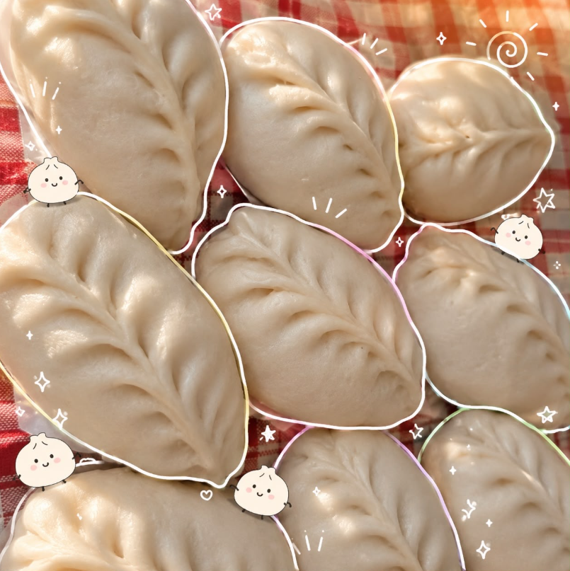
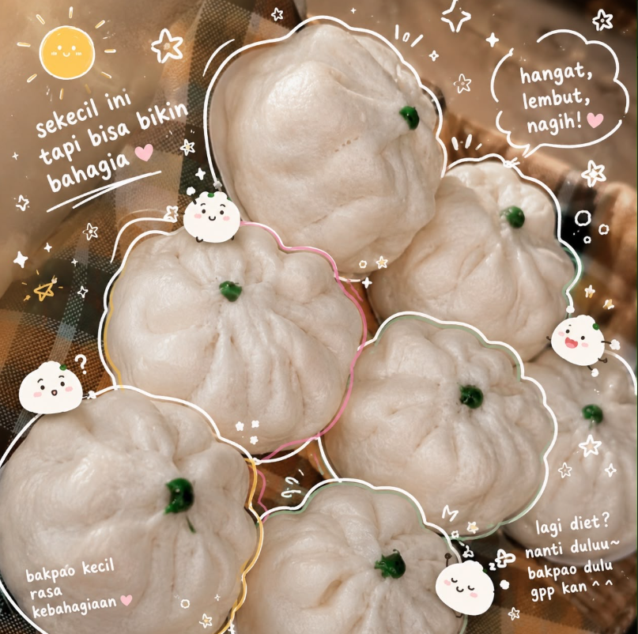
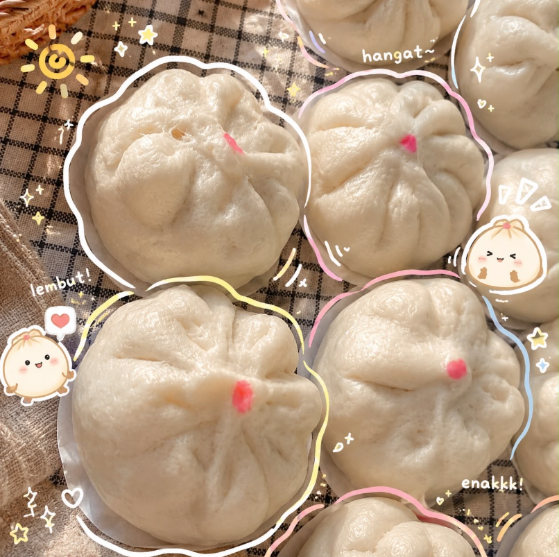
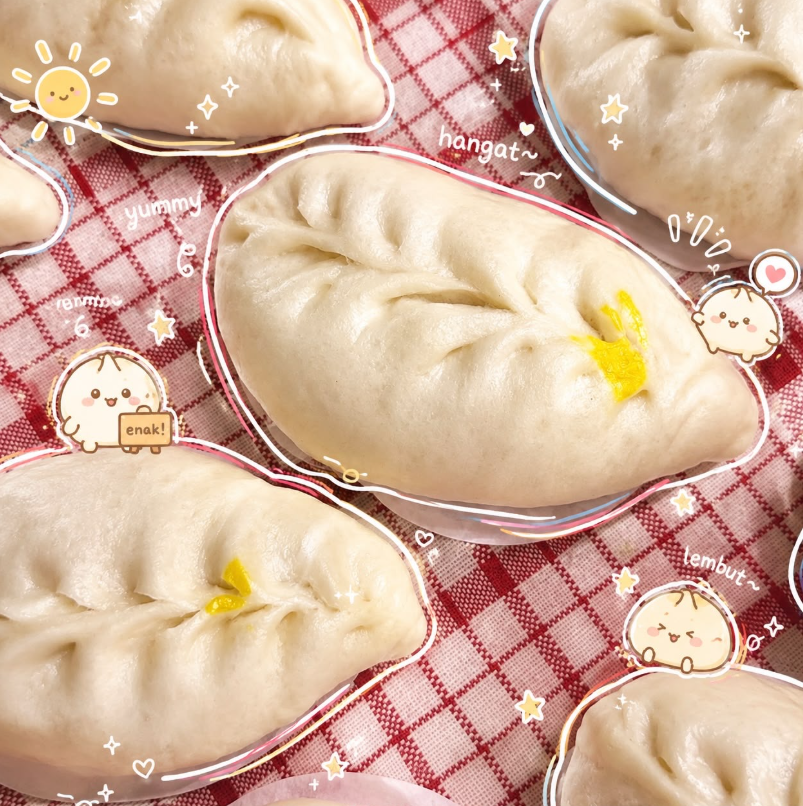

Ayam Spesial
Rp8.000
Sisa Stok: 12 Pcs
Bakpao Suka-Suka Kampung 4 Tarakan
Update stok harian cabang utama Kampung 4 Tarakan

Rp8.000
Sisa Stok: 12 Pcs
Rp6.000
Sisa Stok: 18 Pcs
Rp6.000
Sisa Stok: 25 Pcs
Rp6.000
Sisa Stok: 4 Pcs (Hampir Habis)Temukan outlet kami terdekat di kotamu:
Bakpao Suka-Suka juga tersedia dan bisa dikunjungi di: Kabupaten Berau, Kota Samarinda, Kota Balikpapan, dan Kabupaten Malinau.
Silakan klik tombol WhatsApp di bawah untuk meminta admin menyimpankan stok.
Pembayaran bisa dilakukan tunai atau via QRIS.
Pengambilan bisa langsung ke booth Kampung 4 atau dikirim menggunakan kurir Grab.
Silakan hubungi WhatsApp resmi kami untuk mengamankan varian rasa favoritmu.
Karena stok harian sering habis di jam 09:00 - 10:00 WITA, pemesanan dan permintaan simpan stok dilakukan sebelum jam tersebut via WhatsApp.
Social Media Resmi
Ikuti informasi dan update promo kami melalui akun media sosial resmi: